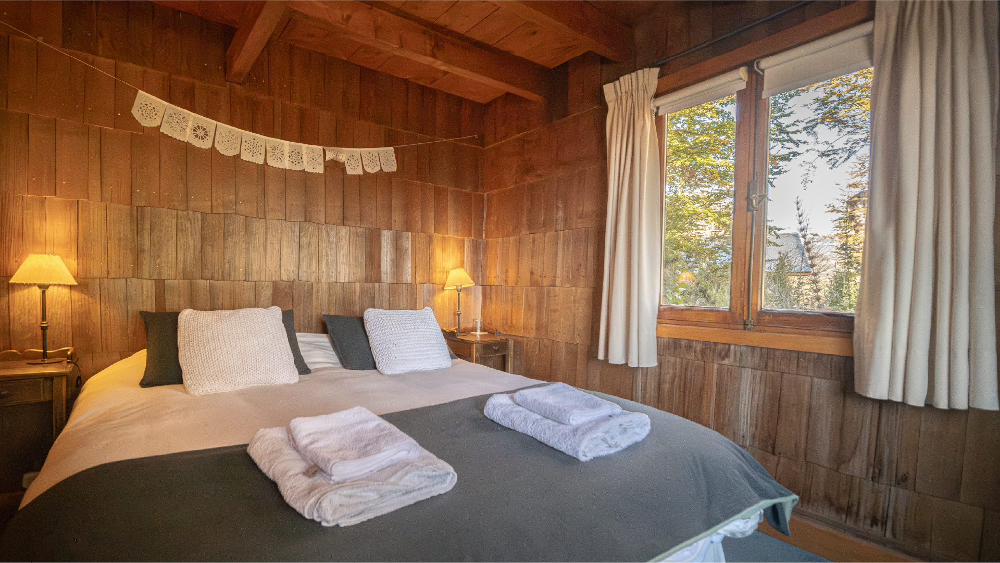
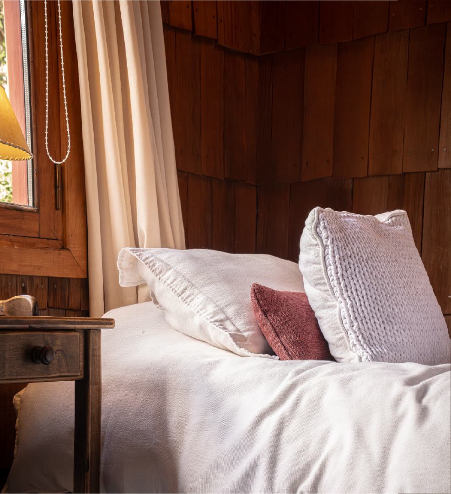
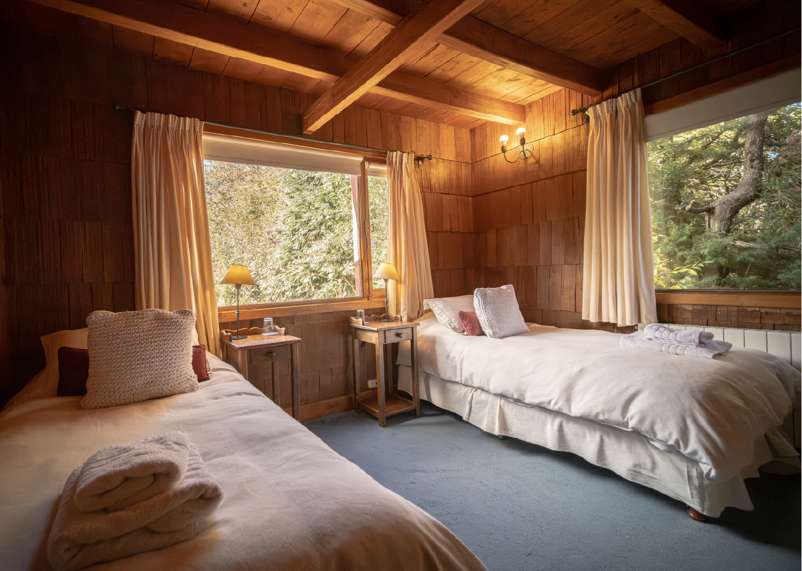
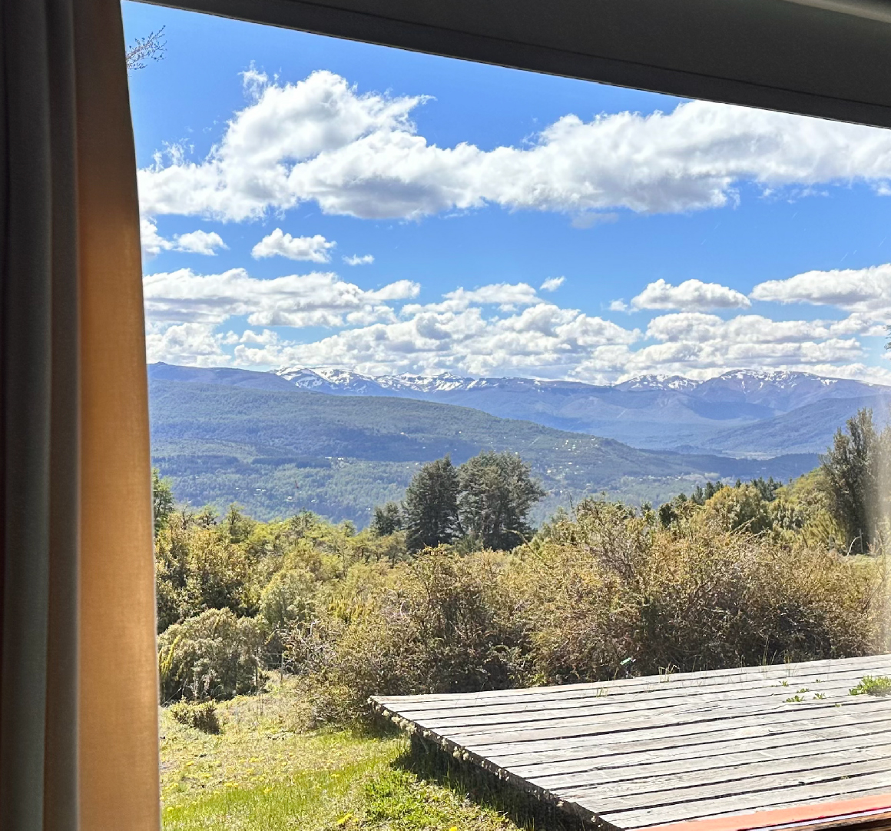
Habitaciones dobles
Ideales para parejas o escapadas tranquilas. Con baño en suite y vistas al entorno natural.
Hostería de montaña en San Martín de los Andes
En la Estancia Miralejos, a 30 minutos de San Martín de los Andes, te esperamos con vistas únicas, tranquilidad y una experiencia auténtica en la Patagonia.
Consultar disponibilidadDescanso con identidad
Nuestras habitaciones combinan calidez, vistas abiertas y la tranquilidad del entorno natural. Cada espacio está diseñado para que puedas desconectar, descansar y disfrutar del ritmo de la montaña.




Ideales para parejas o escapadas tranquilas. Con baño en suite y vistas al entorno natural.
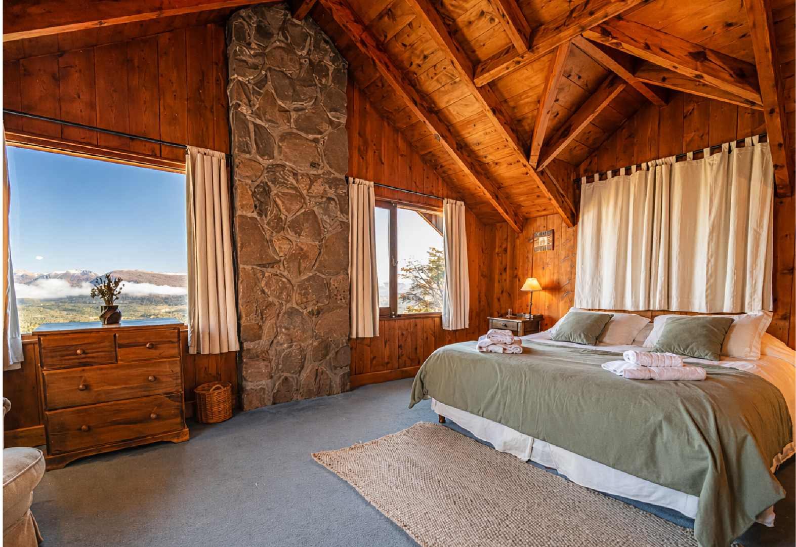
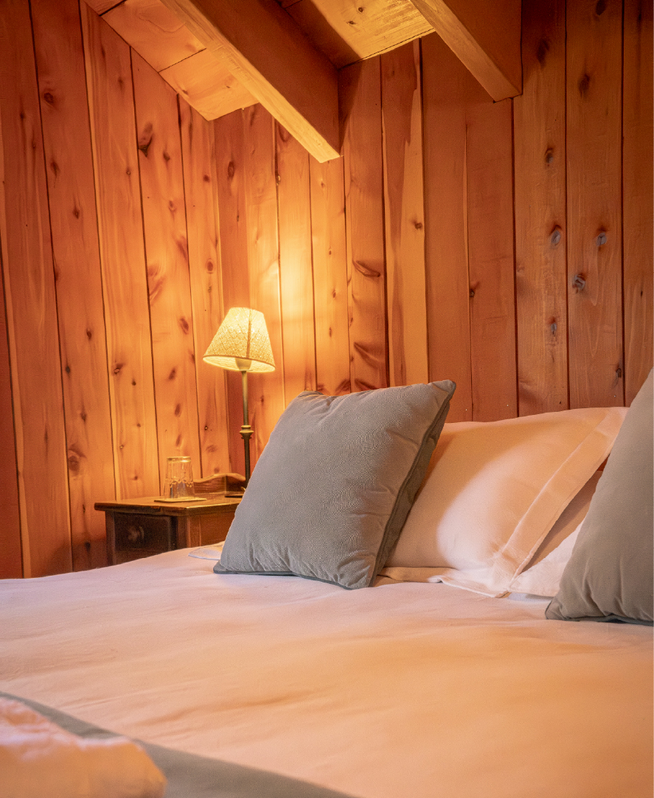
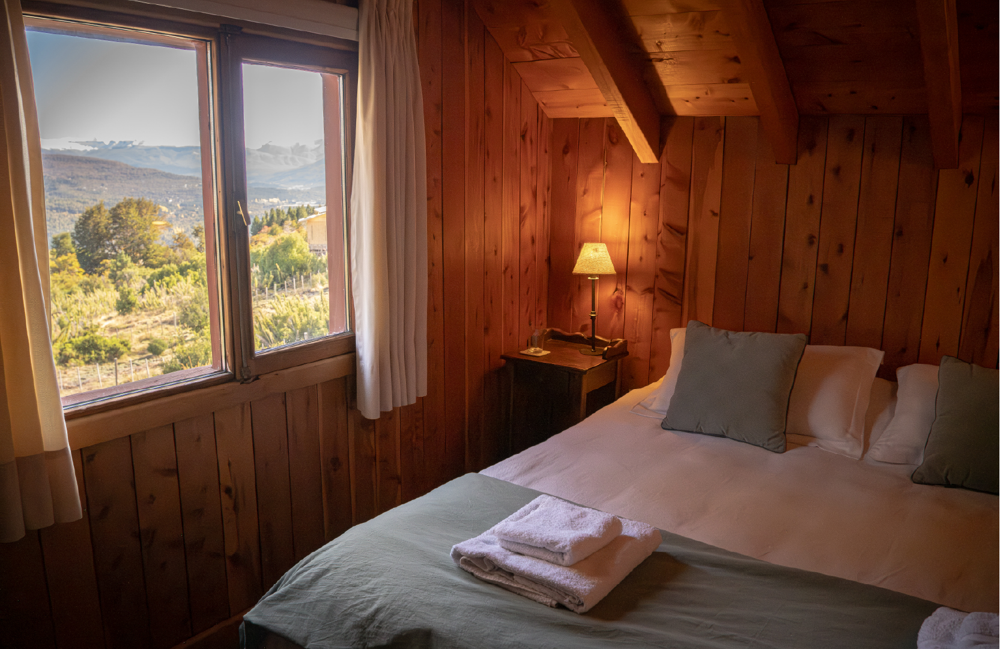
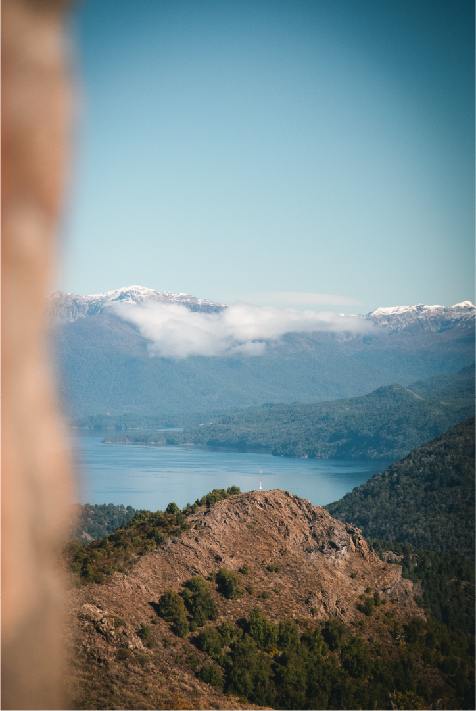
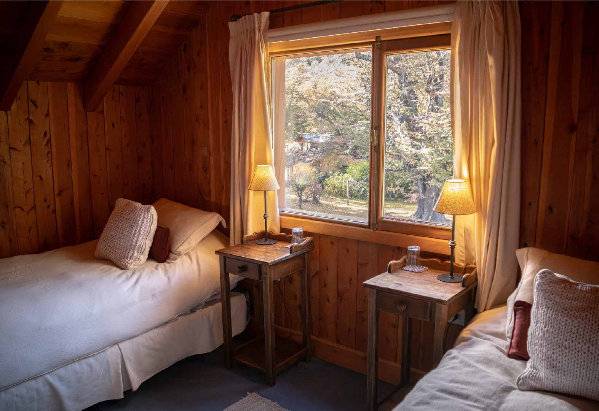
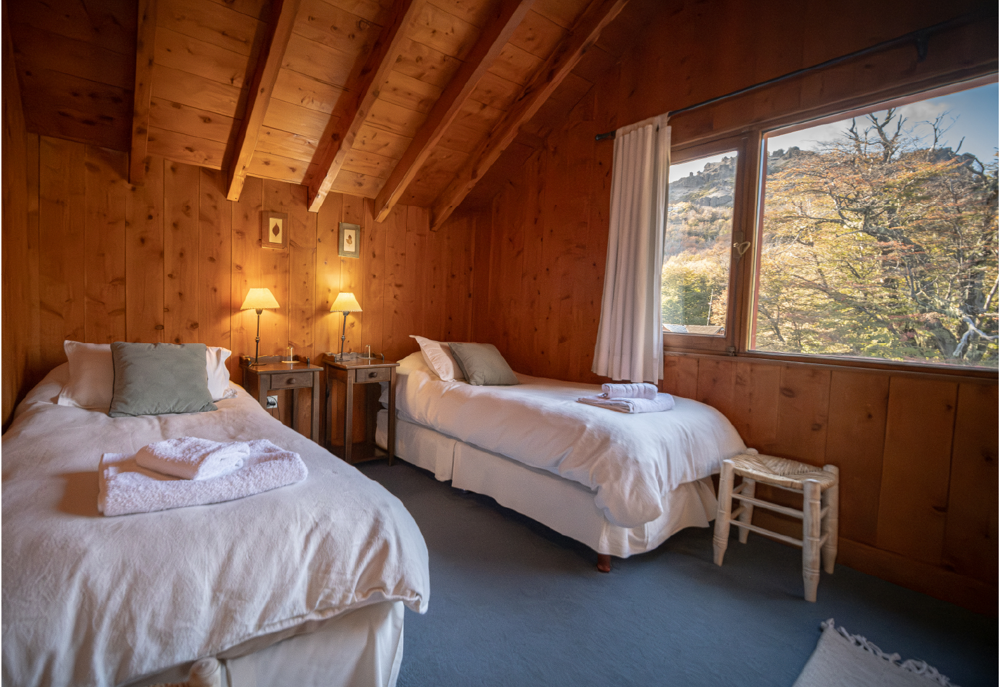
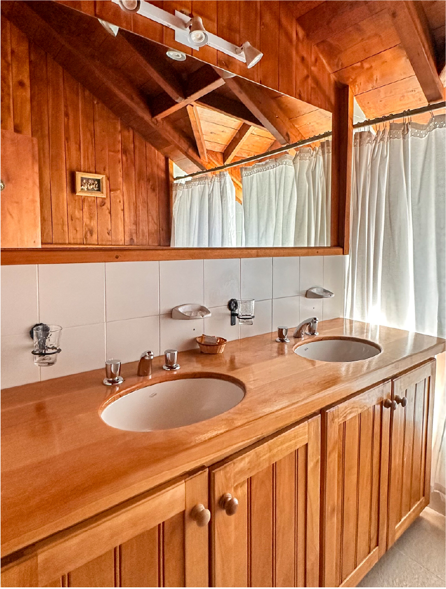
Espacios amplios y funcionales para hasta 4 personas, pensados para familias, grupos o estadías más largas. Cuentan con dos habitaciones y un baño.
Comodidad simple
Buscamos que tu estadía sea cómoda y simple desde el primer momento.
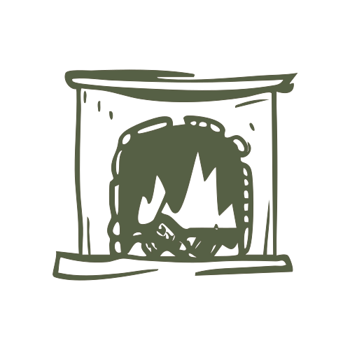
Espacios comunes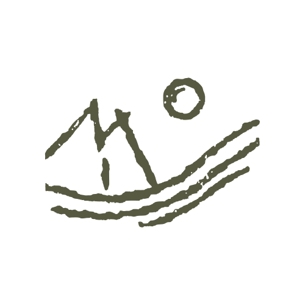
Entorno natural con senderosA medida de tu viaje
Si querés llevar tu experiencia un paso más allá, podés sumar:
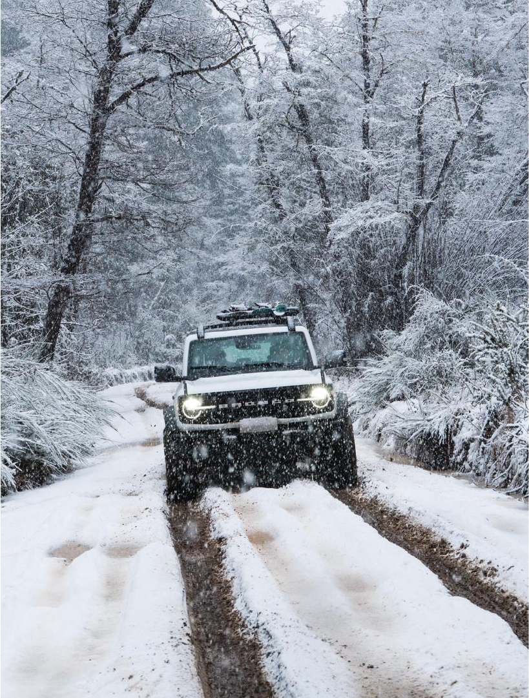
Una forma cómoda y segura de moverte por caminos de montaña y llegar a cada experiencia con tranquilidad.
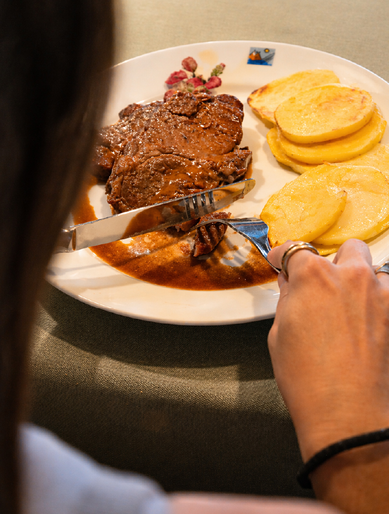
Sabores caseros y una propuesta cálida para cerrar el día sin salir del entorno de la posada.

Senderos y recorridos para descubrir el bosque, respirar aire puro y conectar con la montaña a otro ritmo.
Te ayudamos a organizar cada detalle para que solo tengas que disfrutar.

El entorno
Estamos ubicados en la Estancia Miralejos, un barrio privado a 30 minutos de San Martín de los Andes. Además contamos con un camino interno, que no pasa por el pueblo, a 30 minutos del Cerro Chapelco. Un entorno único donde el bosque, la montaña y el silencio son protagonistas.
Desde la posada podés acceder a senderos, miradores y paisajes abiertos.
San Martín de los Andes, Neuquén, Argentina
Todo el año
La montaña ofrece algo distinto en cada estación. Desde la posada podés vivir la naturaleza de múltiples formas.
A solo 30 minutos del Cerro Chapelco, ideal para esquí y snowboard. También caminatas en la nieve y paisajes únicos.
Senderismo, miradores, lagos y actividades al aire libre en un entorno natural privilegiado.
Espacios para descansar, reconectar y disfrutar del ritmo de la montaña.
Tu próxima escapada
Escribinos y te ayudamos a planificar tu estadía.
Consultar por WhatsApp